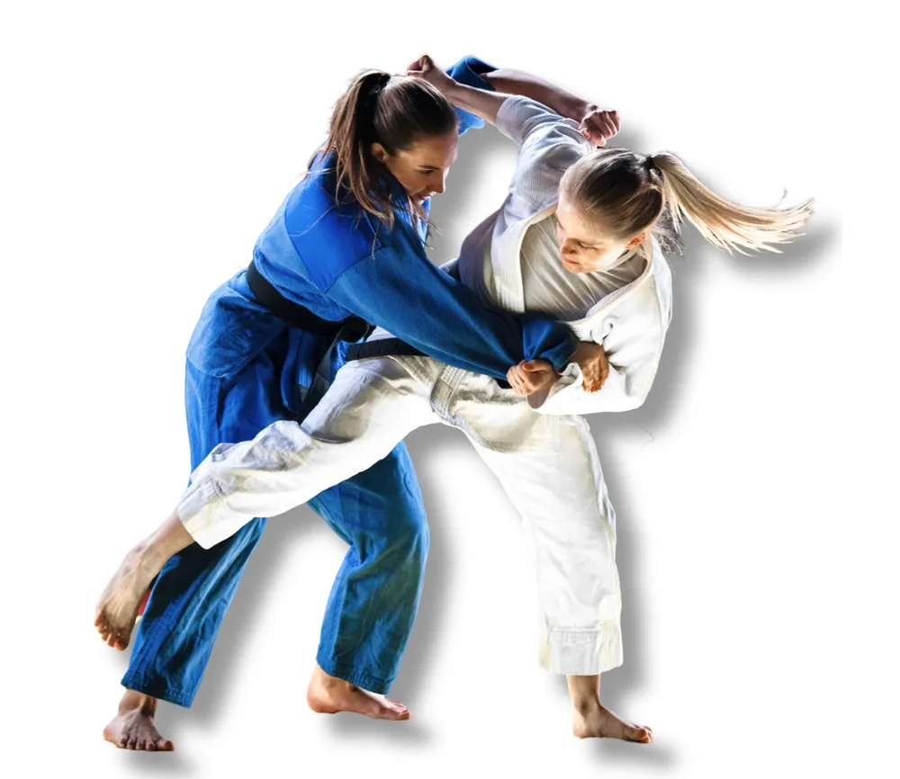

Desde 1º de abril de 2017, o Kodokan reconhece 100 técnicas oficiais. Toque num galho para abrir. Toque numa técnica para ver a tradução, o lugar no go-kyo e o que a regra diz.
Muitos nomes dizem qual parte do corpo ou do judogi trabalha. Toque numa parte para ver as técnicas.
INTERNATIONAL JUDO FEDERATION (IJF). IJF/Kodokan classification of judo. [S. l.]: IJF Academy, 2025a.
INTERNATIONAL JUDO FEDERATION (IJF). Sport and Organisation Rules: Refereeing Rules 2025-2028. [S. l.]: IJF, 2025b.
INTERNATIONAL JUDO FEDERATION (IJF). Judo techniques. Disponível em: judo.ijf.org. Acesso em: 9 nov. 2026.
ITO, K. et al. The transformation of technical-tactical behaviors for hand techniques used in attacking below the belt after the 2010 International Judo Federation rule revision. Archives of Budo, v. 9, n. 1, p. 1-6, 2013.
KODOKAN. Texto para os exames de graduação: Kodokan judô. Tóquio: Kodokan, 2026.
SANTOS, S. G. dos. Teoria e metodologia do judô. Florianópolis: CDS/UFSC, 2007. Apostila.
Traduções em português: livres, a partir do glossário da IJF (2025a). Prof. Guilherme Weiss Freccia.